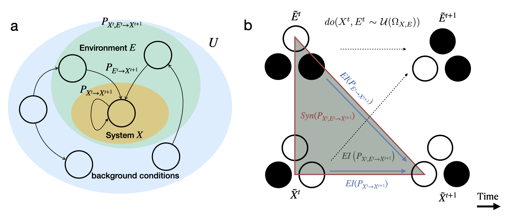
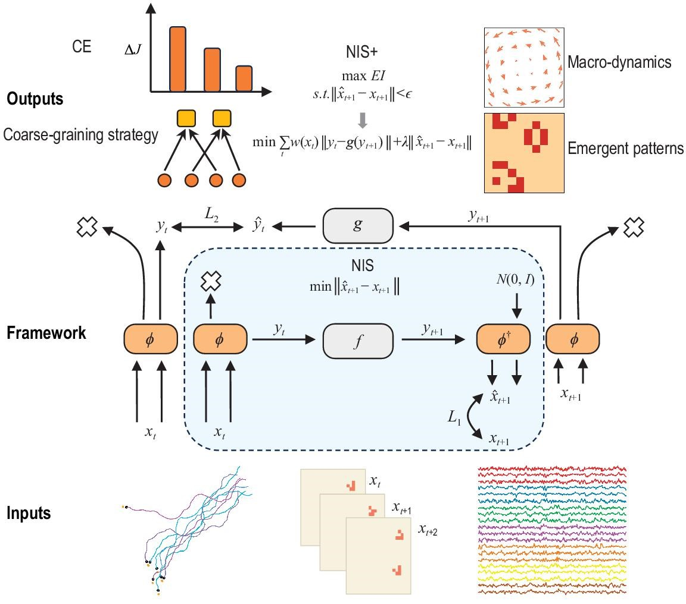
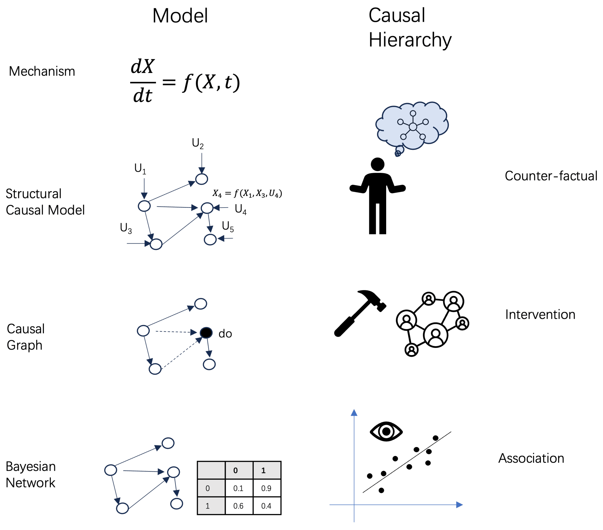
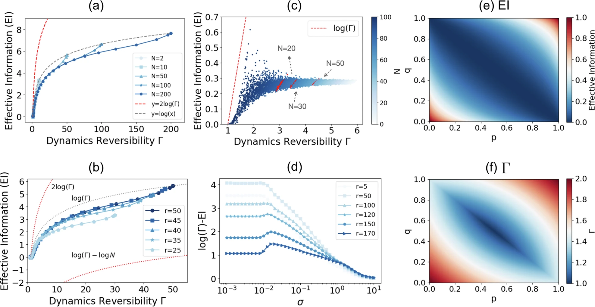
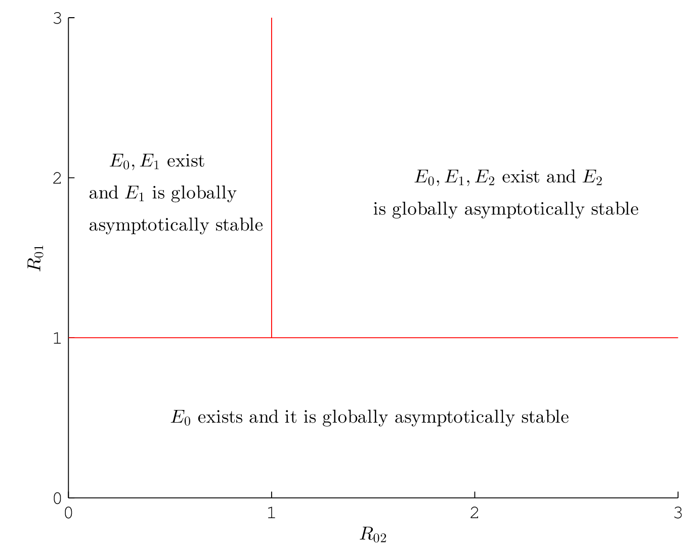
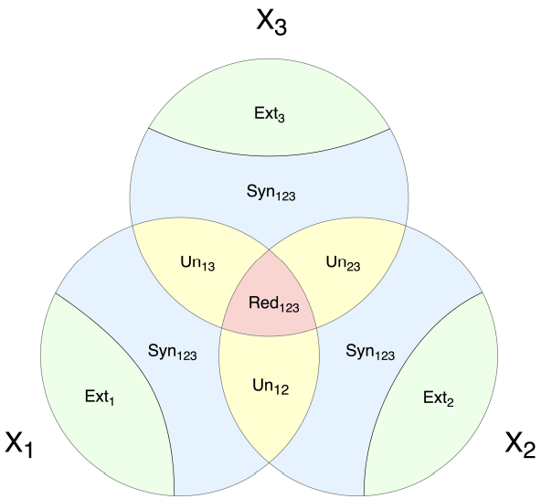

-
⭐ 近期投入精力最多 / Currently Most Intensive Work
Quantifying system-environment synergistic information by effective information decomposition
Mingzhe Yang, Linli Pan, Jiang Zhang
Arxiv, 2025.

What is the most crucial characteristic of a system with life activity? Currently, many theories have attempted to explain the most essential difference between living systems and general systems, such as the self-organization theory and the free energy principle, but there is a lack of a reasonable indicator that can measure to what extent a system can be regarded as a system with life characteristics, especially the lack of attention to the dynamic characteristics of life systems. In this article, we propose a new indicator at the level of dynamic mechanisms to measure the ability of a system to flexibly respond to the environment. We proved that this indicator satisfies the axiom system of multivariate information decomposition in the partial information decomposition (PID) framework. Through further disassembly and analysis of this indicator, we found that it is determined by the degree of entanglement between system and environmental variables in the dynamics and the magnitude of noise. We conducted measurements on cellular automata (CA), random Boolean networks, and real gene regulatory networks (GRN), verified its relationship with the type of CA and the Langton parameter, and identified that the feedback loops have high abilities to flexibly respond to the environment on the GRN. We also combined machine learning technology to prove that this framework can be applied in the case of unknown dynamics.
-
🏆 个人代表作 / Most Significant Work
Finding emergence in data by maximizing effective information
Mingzhe Yang, Zhipeng Wang, Kaiwei Liu, Yingqi Rong, Bing Yuan, Jiang Zhang
National Science Review, 2025.

Quantifying emergence and modeling emergent dynamics in a data-driven manner for complex dynamical systems is challenging due to the fact that emergent behaviors cannot be directly captured by micro-level observational data. Thus, it is crucial to develop a framework to identify emergent phenomena and capture emergent dynamics at the macro-level using available data. Inspired by the theory of causal emergence (CE), this paper introduces a machine learning framework to learn macro-dynamics in an emergent latent space and quantify the degree of CE. The framework maximizes effective information, resulting in a macro-dynamics model with enhanced causal effects. Experimental results on simulated and real data demonstrate the effectiveness of the proposed framework. It quantifies degrees of CE effectively under various conditions and reveals distinct influences of different noise types. It can learn a one-dimensional coarse-grained macro-state from functional magnetic resonance imaging data to represent complex neural activities during movie clip viewing. Furthermore, improved generalization to different test environments is observed across all simulation data.
中文解读 Chinese Version
-
Emergence and Causality in Complex Systems: A Survey of Causal Emergence and Related Quantitative Studies
Bing Yuan, Jiang Zhang, Aobo Lyu, Jiayun Wu, Zhipeng Wang, Mingzhe Yang, Kaiwei Liu, Muyun Mou, Peng Cui
Entropy, 2024.

Emergence and causality are two fundamental concepts for understanding complex systems. They are interconnected. On one hand, emergence refers to the phenomenon where macroscopic properties cannot be solely attributed to the cause of individual properties. On the other hand, causality can exhibit emergence, meaning that new causal laws may arise as we increase the level of abstraction. Causal emergence (CE) theory aims to bridge these two concepts and even employs measures of causality to quantify emergence. This paper provides a comprehensive review of recent advancements in quantitative theories and applications of CE. It focuses on two primary challenges: quantifying CE and identifying it from data. The latter task requires the integration of machine learning and neural network techniques, establishing a significant link between causal emergence and machine learning. We highlight two problem categories: CE with machine learning and CE for machine learning, both of which emphasize the crucial role of effective information (EI) as a measure of causal emergence. The final section of this review explores potential applications and provides insights into future perspectives.
中文解读 Chinese Version
-
Dynamical Reversibility and a New Theory of Causal Emergence based on SVD
Jiang Zhang, Ruyi Tao, Keng Hou Leong, Mingzhe Yang, Bing Yuan
npj Complexity, 2025.

The theory of causal emergence (CE) with effective information (EI) posits that complex systems can exhibit CE, where macro-dynamics show stronger causal effects than micro-dynamics. A key challenge of this theory is its dependence on coarse-graining method. In this paper, we introduce a fresh concept of approximate dynamical reversibility derived from the singular value decomposition(SVD) of the Markov chain and establish a novel framework for CE based on this. We find that the essence of CE lies in the presence of redundancy, represented by irreversible and correlated information pathways within the Markov dynamics. Therefore, CE can be quantified as the potential maximal efficiency increase for dynamical reversibility or information transmission. We also demonstrate a strong correlation between the approximate dynamical reversibility and EI, establishing an equivalence between the SVD and EI maximization frameworks for quantifying CE, supported by theoretical insights and numerical examples from Boolean networks, cellular automata, and complex networks. Importantly, our SVD-based CE framework is independent of specific coarse-graining techniques and effectively captures the fundamental characteristics of the dynamics.
中文解读 Chinese Version
-
Stability analysis of HCV dynamic model with saturation incidence, cellular immunity and interferon effect in intrahepatic and extrahepatic tissues
Bin Yu, Jin Shi, Zeyu Xue, Mingzhe Yang, Xue Yang, Yongmei Su
Mathematics and Computers in Simulation, 2024.

An HCV model with saturation incidence and cellular immunity is constructed and analyzed. The model takes account of both intrahepatic and extrahepatic tissues and the effect of antiviral drugs especially the interferon. The basic reproduction number R 01 and CTL immune reproduction number R 02 are calculated, respectively. The existence of three equilibria, namely infection-free, immune response-free, infection-immune coexistence equilibrium is analyzed with a novel method. Stability analysis is also given with corresponding reproduction number, and the results show that when R 01 < 1, there are no virus and immune response existed in the end; when R 02 < 1 < R 01, the virus survives, but immune response gradually disappears; when R 02 > 1, the system will be globally stable with both virus and immune response existing. Numerical analysis is also given which is consistent with the theoretical analysis.
-
System Information Decomposition
Aobo Lyu, Bing Yuan, Ou Deng, Mingzhe Yang, Jiang Zhang
Arxiv, 2023.

To characterize the complex higher-order interactions among variables within a system, this study introduces a novel framework, termed System Information Decomposition (SID), aimed at decomposing the information entropy of variables into information atoms based on their interrelations. Diverging from the established Partial Information Decomposition (PID) framework, which predominantly concentrates on the directional interactions stemming from an array of source variables to a single target variable, SID adopts a holistic approach, scrutinizing the interactions across all variables within the system. Specifically, we proved all the information atoms are symmetric, which means the disentanglement of unique, redundant, and synergistic information from any specific target variable. Hence, our proposed SID framework can capture the symmetric pairwise and higher-order relationships among variables. This advance positions SID as a promising framework with the potential to foster a deeper understanding of higher-order relationships within complex systems across disciplines.